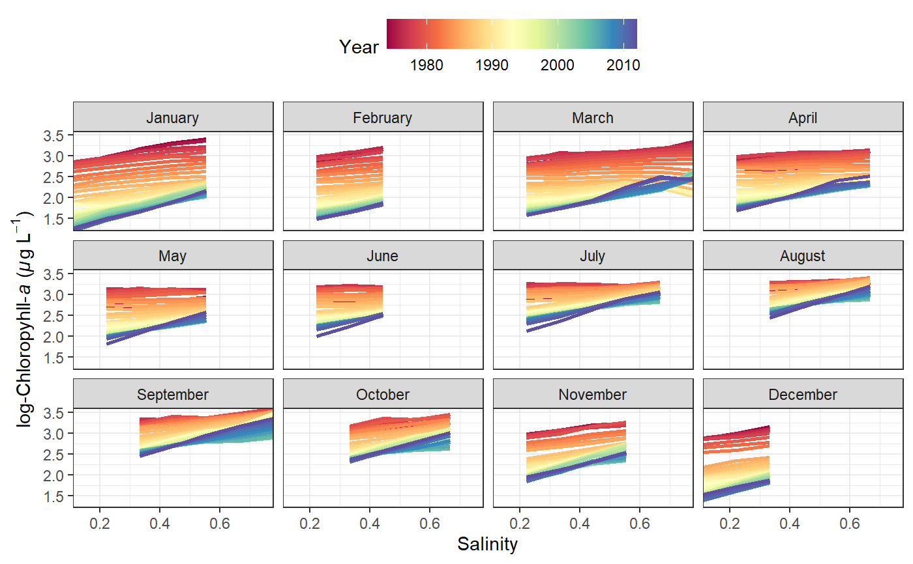

dynaplot.RdPlot the relationship between the modelled response and salinity/flow across the time series using line plots for each month. Each line corresponds to a unique year. This can be used to evaluate temporal variation between the two.
dynaplot(dat_in, ...) # S3 method for tidal dynaplot(dat_in, month = c(1:12), tau = NULL, years = NULL, col_vec = NULL, alpha = 1, size = 1, logspace = TRUE, floscl = TRUE, allflo = FALSE, ncol = NULL, grids = TRUE, scales = NULL, pretty = TRUE, use_bw = TRUE, fac_nms = NULL, ...) # S3 method for tidalmean dynaplot(dat_in, month = c(1:12), years = NULL, col_vec = NULL, alpha = 1, size = 1, logspace = TRUE, floscl = TRUE, allflo = FALSE, ncol = NULL, grids = TRUE, scales = NULL, pretty = TRUE, use_bw = TRUE, fac_nms = NULL, ...)
| dat_in | input tidal or tidalmean object |
|---|---|
| ... | arguments passed to other methods |
| month | numeric input from 1 to 12 indicating the monthly predictions to plot |
| tau | numeric vector of quantile to plot. The function will plot the 'middle' quantile if none is specified, e.g., if 0.2, 0.3, and 0.4 are present in the fitted model object then 0.3 will be plotted. |
| years | numeric vector of years to plot, one to many, defaults to all |
| col_vec | chr string of plot colors to use, passed to |
| alpha | numeric value from zero to one indicating line transparency |
| size | numeric value for line size |
| logspace | logical indicating if plots are in log space |
| floscl | logical indicating if salinity/flow on x-axis is standardized (default) or in original scale |
| allflo | logical indicating if the salinity or flow values for plotting are limited to the fifth and ninety-fifth percentile of observed values for the month of interest |
| ncol | numeric argument passed to |
| grids | logical indicating if grid lines are present |
| scales | chr string passed to ggplot to change x/y axis scaling on facets, acceptable values are |
| pretty | logical indicating if my subjective idea of plot aesthetics is applied, otherwise the |
| use_bw | logical indicating if the |
| fac_nms | optional chr string for facet labels, which must be equal in length to |
A ggplot object that can be further modified
These plots can be used to examine how the relationship between the response variable and flow varies throughout the time series. It is essentially identical to the plot produced by gridplot, except lines plots are returned that show the relationship of the response variable with salinity/flow using different lines for each year. The interpolation grid that is stored as an attribute in a fitted tidal object is used to create the plot. Each plot is limited to the same month throughout the time series to limit seasonal variation. Plots are also constrained to the fifth and ninety-fifth percentile of observed salinity/flow values during the month of interest to limit the predictions within the data domain. This behavior can be suppressed by changing the allflo argument.
Note that the year variable used for color mapping is treated as a continuous variable although it is an integer by definition.
# load a fitted tidal object data(tidfit) # plot using defaults, # defaults to the fiftieth quantile for all years dynaplot(tidfit)